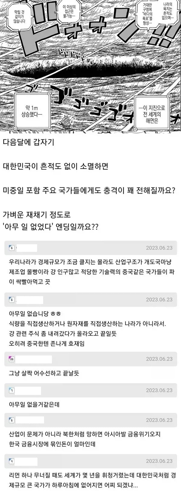

실제로 없어질 시 : 크아아악!! 꼬리아!! 칸코쿠!!!

실제로 없어질 시 : 크아아악!! 꼬리아!! 칸코쿠!!!
지금 중국을 군사적으로 견재하고있는 나라가 한국인데 먼소리야 ㅋㅋㅋ
꼴랑 그리스, 미국 증권사 하나 망해도 세계가 휘청였는데
우리나라 왤카 과소평가 할까
댓글보니까 일베 같은데, 멍청한 소리하네
은행 하나만 없어져도 개지랄 났었는데 나라 하나가 증발하면 개씹씹씹씹씹씹씹씹지랄나겠지
귀칼무한성사전예약표가 100만일때도 최종성적은 200만이 한계라고 개소리씨부리는 그냥 기본적인 수요예측도 제대로 못하는 애들임
지금 ai 거품으로 펌핑되고 있는 시장인데
메모리공급이 반의반의반토막 나는데 괜찮다고?
우리나라가 좆으로 보여?
그 자리 먹는것도 시간이 좀 있어야 먹는거지 당장은 저 물량 소화해줄 곳이 없어서 전세계적으로 난리날 예정임
개드립 의견따위는 따위일뿐이지
어디 동남아 하나가 그냥 사라져도 전세계 충격이 클건데 대한민국을 좆으로 보나..
없어져도 되는건 지들 인생.
수출액보다 수입액이 더 많은 그리스가 휘청여도 유럽이 난리였는데
한국은 그리스 따위로 만들만큼 세계경제 비중이 높은데 ㅋㅋㅋ
대체 한국을 얼마나 ㅄ으로 보는거임 ㅋㅋㅋㅋㅋ
아는만큼 보이는법이지 ㅋㅋ
옆나라 중국 일본 형님들이 돌아와달라고 제사지냄
다죽는다고 ㅋㅋㅋ
저때도 과소평가했는데 지금은 이상하게 저런 애들 보임
경제적으로도 쇼크 오고 그주변 안보도 크게 흔들림
지금 당장 메모리 공급 부족해서 삼전 하닉 영업이익 폭발한 거만 봐도 대충 알 수 있음 마이크론 혼자서 절대 감당 못 함 AI 메모리 병목 때문에 세계 증시 직격탄 맞을걸
걍 한국이 한방에 터져서 사라짐 되면 당장 주변국 중국 일본 부터 개작살남
가까운 과거 돌아보면 진짜 저게 가능하면 리먼 사태때 중국 일본이 한국 바짓가랑이 제발 그러지 말라고 했겠냐고 ㅋㅋㅋㅋ 근데 그때가 2008년임 지금은 18년이 지난 26년이고 그때랑 체급이 비교가 안되는데 한방에 사라진다?? 걍 세계 경제 및 한국과 교류하던 국가들 한방에 좆됨
우크라이나에 전쟁터져도 세계가 난리나고 그리스 휘청여도 세계가 난리나는데 뭔...
댓글다는 본인이 좆도 아니니까 나라에 자아의탁해서 없어져도 별거아님 ㅋ 하는거지
우리나라가 갑자기 사라지면 우리는 편안하게 사라져서 문제 없지만
남은 지구 국가들이 씹창이 나겠지. 경제규모랑 우리가 차지하고 진행하고 유지하고 있는 일들이
저기 원종이 바람들처럼 누구나 대체가능한 분야가 아님ㅋㅋ
여파 세기단위로 올게 뻔하지
변압기 한국만 만들수있을걸?
ㄴㄴ 그건 아님
10년전이었어도 엄청난 혼란이 올텐데
지금 체급이면 진짜 세계 대혼란임
저 논리면 미국,중국 빼고 없어져도 아무 문제 없음
진짜 뇌가 장식인 병신들
일단 일본은 국방비 증액 땜에 내수 휘청일듯
현대사회에서 갑자기 증발하면 안좆되는 나라가 많지 않을건데;
우리가 이름들어본 앵간한 나라는 순식간에 증발하면 인류망함 ㅋㅋ
타노스 마냥 손가락 딱 튕기자마자 사라지면 여파가 크겠지만, 서서히 사라져가면 영향력 1도 없겠지. 시간과 간격의 문제일뿐.
미국의 투자은행 하나 무너졌다고 전세계 대공황 왔는데
선진국 하나가 통째로 사라지는데 아무일없어? ㅋㅋㅋ
요즘같은 산업체인이 고도로 얽힌 국제사회에서 존나 멍청한 소리지
우리나라 국채 중에 외국인이 보유한 금액이 310조라고 함. 이게 하루아침에 휴지조각이 되는 건데 여파가 없을리가 있나.
https://stock.mk.co.kr/news/view/1063773
국채만 따졌을 때 저 정도고, 우리나라 회사와 거래하는 회사들, 특히 보험 업계는 천재지변 면책이 되어도 파산 직전까지 갈 듯. 여파는 짧게 잡아도 10년은 갈 거라고 본다.